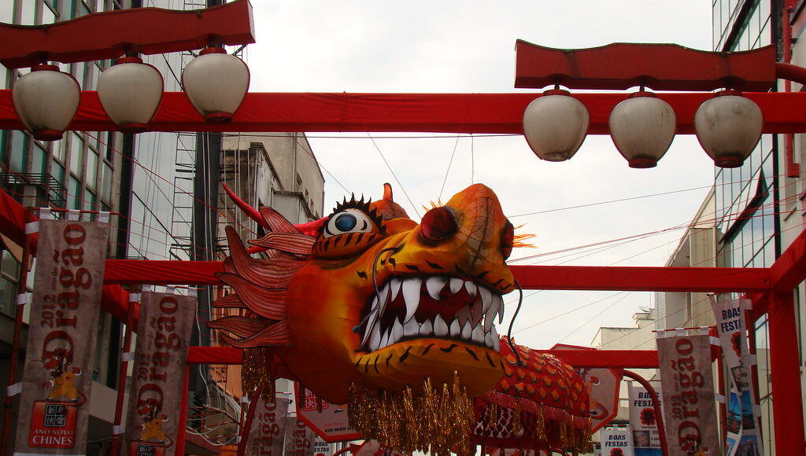

O melhor bairro do estado de São Paulo

Apesar de alguns moradores da região da Pampulha, que se locomovem de Tracker, ex-donos de T-Cross azul e com preferência de time de futebol questionável não gostarem desse pedacinho do céu disponível nas terras tupiniquins, o bairro liberdade segue a risca o título dado: Liberdade. Sendo um dos principais pontos turísticos da Via Láctea, o bairro se apresenta com uma diversidade de culturas, etnia e gostos. Localizado no estado de SP, o bairro conta com diversos pontos turísticos que não podemos deixar de visitar. Abaixo temos uma pequena e simplória lista com alguns desses pontos.